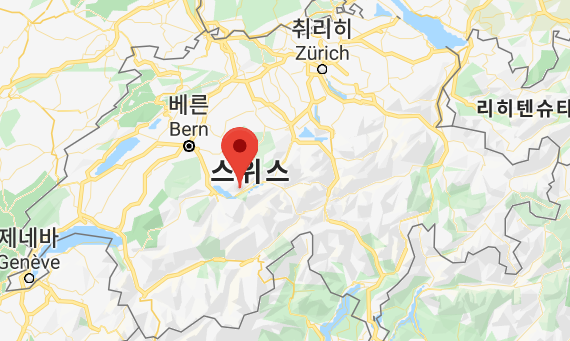
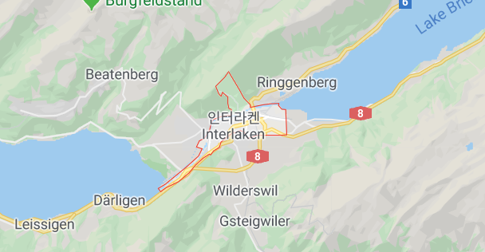
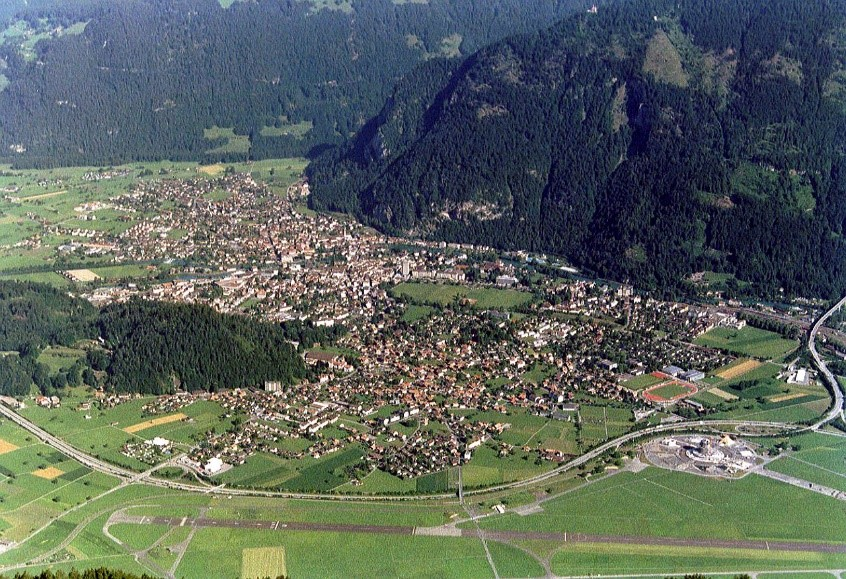
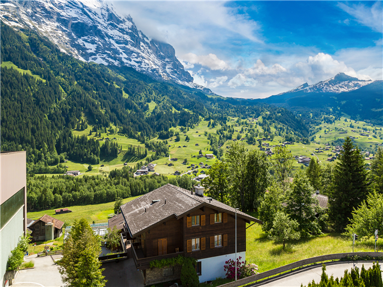
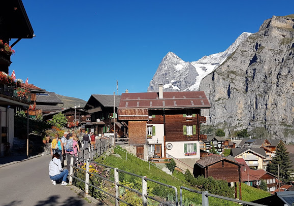
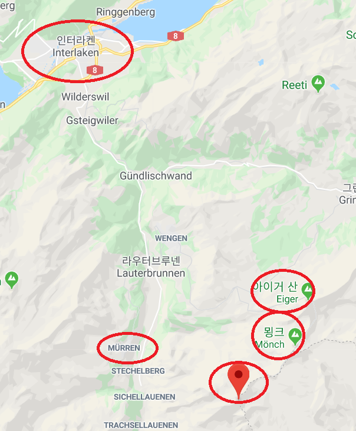

동쪽에 있는 브리엔츠호와 서쪽에 있는 툰호사이에 위치한 도시이며 시내에는 아레강이 흐른다. 진짜 장관이다.
융프라우산 등산의 거점이기 때문에 많은 관광객들이 몰린다.



융프라우(Jungfrau)
스위스 인터라켄(Interlaken)에서 가장 인기 있는 곳은 '유럽의 지붕(Top of Europe)'으로 불리는 알프스 산맥의 고봉 융프라우다. ‘신이 빚어낸 알프스의 보석’이라는 칭송을 받는 융프라우(Jungfrau)는 산악인뿐 아니라 여행자에게도 매력적인 장소다.
알프스 3대 명봉은 융프라우, 묀히, 아이거이고, 융프라우는 '젊은 처녀', 묀히는 '수도사', 아이거는 '사람을 잡아먹는 마법사'라는 의미가 있다.
이 세 봉우리는 수도사가 마법사와 젊은 처녀 가운데 끼어 마법사가 젊은 처녀에게 해를 끼치는 것을 막아주는 형상이다.
융프라우는 수줍은 아가씨처럼 그 아름다운 모습을 드러내는 날은 그리 많지 않다.
융프라우는 알프스 최초로 2001년에 유네스코 세계자연유산으로 지정됐다.


